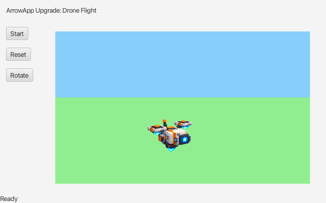

Graphics Hub · JavaFX setup and launch help
Lab 13: ArrowApp Upgrade: Drone Flight
Turn Friday's arrow into a drone: display an image, fly right, stop at the wall, and reset. You will use these same skills in the JavaFX final project.

Your route: Run → Add image → Rotate → Animate → Stop → Reset → Verify. Open each numbered step as you reach it.

01Open and run
- Extract Lab13.zip. In IntelliJ, Open the Lab13 folder containing
pom.xml. - Use JDK 21 and let Maven load. Use Bundled Maven; Maven Runner JRE should be Project JDK (21).
- Open View → Tool Windows → Maven → Execute Maven Goal. Enter
javafx:run.
Check: the arrow appears. Rotate turns it; Reset restores it. Start does nothing yet.
Open ArrowApp.java and SceneToken.java under src/main/java/demo. ArrowApp connects the controls; SceneToken owns the picture and its position.
02Put the PNG in the project
- Download the drone PNG. Save it as
drone.png. - In IntelliJ's left panel, select Project view and expand
src → main. - Right-click main → New → Directory. Name it
resources. - Right-click resources → New → Directory. Name it
images. - Copy the downloaded file from your file manager; paste it into images in IntelliJ.
Lab13/
pom.xml
src/main/
java/demo/
ArrowApp.java
SceneToken.java
resources/images/
drone.pngMaven puts everything under resources on the runtime classpath. Java therefore looks up /images/drone.png, without src/main/resources.
Check: double-click drone.png in IntelliJ. You should see the drone, not a web page. If needed, reload Maven; right-click resources → Mark Directory As → Resources Root.
03Replace the arrow with an ImageView
File: SceneToken.java · Where: imports and constructor, TODO 1
Image holds the pixels. ImageView puts those pixels on screen.
- Add these imports:
import javafx.scene.image.Image;
import javafx.scene.image.ImageView;- Replace the shaft/tip creation and
view = new Group(shaft, tip);with:
Image image = new Image(SceneToken.class
.getResource("/images/drone.png").toExternalForm());
ImageView drone = new ImageView(image);
drone.setFitWidth(90);
drone.setPreserveRatio(true);
view = new Group(drone);- Keep the existing
view.getTransforms().add(turn);andreset();lines. - The square image displays at 90 × 90. Change the Rotate field's pivot to its center:
private final Rotate turn = new Rotate(0, 45, 45);Check: close the app and run javafx:run again. The drone appears. Rotate still adds 15°; Reset restores it. Explain why the existing handlers still work.
Core checkpoint: reach this working image/Rotate/Reset stage before adding animation.
04Move one small step
File: SceneToken.java · Where: step(playWidth), TODO 4
translateX is the Group's horizontal offset. Add this statement before the existing return false;:
view.setTranslateX(view.getTranslateX() + SPEED);The provided SPEED is 3 pixels per tick. Keep return false; for now; you will replace it after adding the boundary.
Predict: does rotating the picture change this calculation? It should still move right.
05Repeat the step with one Timeline
File: ArrowApp.java · Where: TODO 3, before the button handlers
A Timeline calls your code repeatedly. This example calls step about every 20 milliseconds. The imports and flight field are already supplied.
flight = new Timeline(new KeyFrame(Duration.millis(20), event -> {
token.step(canvas.getWidth());
}));
flight.setCycleCount(Timeline.INDEFINITE);At TODO 4, inside the existing Start handler, add:
flight.play();
status.setText("Flying right");Check: Start moves the drone. Click Start several times: it should keep the same speed. Close the window before the drone leaves the play area; you will add stopping next.
Notice: create the Timeline once. Its callback runs repeatedly. Calling play() again reuses that same animation; do not create a new Timeline inside Start. Load the image only in the constructor.
06Stop at the right edge
File: SceneToken.java · Where: keepInside(playWidth), TODO 5
Use the play area's width, not the full window. Rotation changes the picture's footprint; getBoundsInParent().getMaxX() gives its actual right edge.
Use this structure. Replace the comment with one statement:
double rightEdge = view.getBoundsInParent().getMaxX();
double overflow = rightEdge - playWidth;
if (overflow > 0) {
// TODO: subtract overflow from view.getTranslateX()
// and store the result with view.setTranslateX(...).
}Try it mentally: right edge 503, play width 500 → overflow 3. Move the drone left by 3.
Back in step, keep the movement statement, then call keepInside(playWidth). Replace return false; with:
return view.getBoundsInParent().getMaxX() >= playWidth - 0.001;true means “arrived.” The tiny tolerance handles rounding.
File: ArrowApp.java · Where: Timeline callback and Rotate handler
Replace the callback's standalone token.step(...) call with this branch. Fill in the two actions:
if (token.step(canvas.getWidth())) {
// TODO: stop flight.
// TODO: show an arrival message using status.setText(...).
}After token.rotate();, add:
token.keepInside(canvas.getWidth());Check: test arrival at 0°, 45°, and 90°. The whole drone stays inside. Rotate at the wall also keeps it visible.
07Reset, restart, and change speed
File: ArrowApp.java · Where: Reset handler, TODO 6
Use this order inside the existing handler:
flight.stop();
token.reset();
// TODO: restore the Ready status message.Check: Start → Reset mid-flight → Start again. Then let it reach the wall → Reset → Start. Reset restores (180,160), angle 0, and stopped animation.
In SceneToken, choose a different positive SPEED. Predict, run, and explain the change to your verifier. Check that the boundary still works. No written reflection is required.
OptionalPrompt for your own game asset
Use the supplied drone for this lab. For a future game, specify purpose, view/direction, style, displayed size, file format, and background.
Example prompt:
Create one original friendly voxel drone sprite for a JavaFX game. Its front faces right, with a bright camera and slight asymmetry so rotation is visible. Use a simple silhouette readable at 90 pixels wide. Output a square 512 × 512 PNG with a genuinely transparent background, the entire drone visible, and minimal empty padding. No scenery, text, logos, or copied game textures.
Inspect → refine → test: check the downloaded file for real transparency, cropping, direction, and readability at 90 pixels. Refine one problem at a time: “Keep the design; remove the empty border and preserve transparency.” A painted checkerboard is not transparency.
Bundle your final PNG under resources. If its displayed size is not square, adjust the pivot to half its displayed width and height. Follow the course AI-use/help-citation policy.
OptionalAdd Pause
Add a Pause Button to the controls VBox. Its handler uses flight.pause(). Start's play() resumes without changing position. Test that Reset still works.
HelpIf something goes wrong
- Missing image: check
src/main/resources/images/drone.png, exact capitalization, and lookup/images/drone.png. Reload Maven and rerunjavafx:run. Avoid paths into Downloads. - Image behind background: keep the token Group last in the canvas child list.
- Wrong size/pivot: fit width 90, preserve ratio, pivot (45,45).
- No movement: check Start calls play, cycle count is INDEFINITE, and the callback calls step.
- Reset keeps moving: stop the Timeline before resetting the token.
Verify each student's work
- Open the verification sheet. Print it, or save as PDF and annotate it.
- Each student shows their own app. The group lead records each name, observed checks, and completion status. Another peer or the instructor verifies the lead. Your instructor/TA can also use the sheet for direct check-off.
- The lead uploads readable completed sheet(s) to Lab 13 in Gradescope, listing all verified students. Recheck small fixes before marking Pass.
No written reflections. Keep your Java source and PNG available for demonstration. The required upload is the verification sheet; use the Gradescope deadline.
Skills you practiced
- Asset design: describe a sprite's purpose, perspective, direction, transparency, and displayed size in a prompt, then inspect the result.
- Portable resources: place a PNG under
src/main/resourcesand load it with a classpath path that works beyond your computer. - JavaFX images: distinguish Image pixel data from an ImageView node; control displayed size and aspect ratio.
- Object responsibilities: let SceneToken own its visual Group and transformations while ArrowApp connects controls and animation.
- Animation: separate setup from repeated callbacks and reuse one Timeline for Start, stop, and restart.
- Coordinates and state: keep rotation independent of horizontal movement, clamp rotated bounds to the play area, and reset position, angle, and animation together.
- Verification: predict a speed change, test edge cases, explain behavior, and verify each student's implementation.